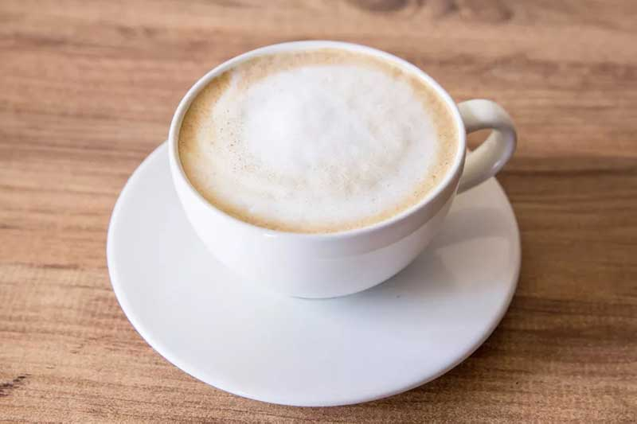

Historias
Café Latte
Podría decirse que la historia del arte latte comienza gracias a dos
fundadores: Luigi Lupi y David Schomer en la década de los 80. Lupi
empezó a desarrollar su técnica en arte latte gracias a su maestro
barista de Verona, Italia, Piero Merlo, quién le mostró las bases para
elaborar los capuchinos. Aunque contrario a lo que se pueda
sobreentender, Luigi Lupi y David Schomer no se conocían sino hasta
mucho tiempo después cuando escucharon el uno del otro: los rumores y
noticias sobre que inventaron esta revolucionaria técnica sobre el café.
Por el año 1998, ambos precursores se encontraron gracias a unos vídeos
de Latte Art que individualmente hacían mejorando su técnica día a día.
Lejos de causar una discusión por quién era el verdadero precursor del
arte latte, Lupi y Schomer se pusieron en contacto e intercambiaron
material audiovisual para mejorar cada uno su técnica. Puede decirse que
ambos baristas son los padres del arte latte.
Café Moca
El café moca toma su nombre de la ciudad costera del mar Rojo de Moca
(Yemen), que ya en el siglo XV era una importante exportadora de café
procedente en gran medida de Abisinia (región de Kaffa), especialmente a
regiones de la península arábiga. Se llama también moca a un tipo de
grano de café procedente de esta ciudad y que recuerda al cacao, de
donde puede venir la asociación con el chocolate y el desarrollo de la
bebida de expreso y chocolate. En algunos lugares de Europa el «café
moca» puede ser esta bebida o simplemente el café elaborado con granos
moca.
Cappuccino

Capuchino viene de la palabra italiana "cappuccio", que significa
capucha, y se asocia al hábito utilizado por los monjes capuchinos. Los
monjes capuchinos comenzaron como un movimiento reformista dentro de los
franciscanos, haciendo llamados al regreso a la vida modesta y el
trabajo duro, que inspiró a los fundadores
Café frappé
El frappé tuvo su origen en la Feria Internacional del Comercio de
Tesalónica de 1957. El representante de la compañía Nestlé, Ioannis
Dritsas, estaba exhibiendo un nuevo producto para niños, una bebida de
chocolate que se preparaba instantáneamente mezclando el cacao con leche
y agitándola en una coctelera.
Café Expreso
El espresso hizo su debut en la Feria Mundial de 1906 en Milán. Luigi
Bezzera y Desidero Pavoni tomaron la idea de Moriondo y crearon una
máquina con una caldera vertical que elaboraba una taza de café en
cuestión de segundos.